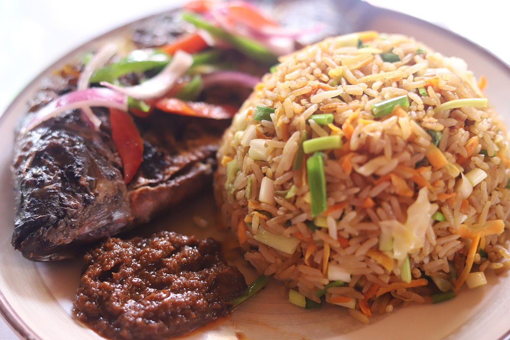

Home
Jollof Rice Receipe

Description
This jollof rice recipe is a West African favorite made with rice, tomatoes, peppers, and spices. It's flavorful, vibrant, and perfect for any celebration or family meal.
Ingredient
- 2 cups long grain rice (washed)
- 4 medium tomatoes (blended)
- 1 red bell pepper (blended)
- 1 small onion (chopped)
- 2 tablespoons tomato paste
- 1/4 cup vegetable oil
- 1 seasoning cube, and 1 teaspoon curry powder
- Salt to taste
- 2 cups water or stock
Steps
- Heat oil, sauté onions, add tomato paste and blended pepper mix. Fry for 5-10 mins
- Add curry, seasoning cube, and salt. Stir and let it cook.
- Pour in water or stock, then add rice.
- Cover and cook on low heat until rice is soft and the liquid is absorbed.